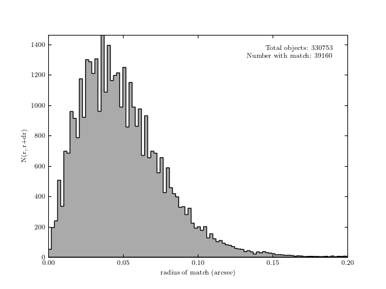

Catalog cross-matching¶
This plots the cross-matched samples between the SDSS imaging data and the SDSS Stripe 82 standard stars.
{kind=link}
# Author: Jake VanderPlas <vanderplas@astro.washington.edu>
# License: BSD
# The figure is an example from astroML: see http://astroML.github.com
import os
import sys
from time import time
import numpy as np
from matplotlib import pyplot as plt
from astropy.visualization import hist
from astroML.datasets import fetch_imaging_sample, fetch_sdss_S82standards
from astroML.crossmatch import crossmatch_angular
# get imaging data
image_data = fetch_imaging_sample()
imX = np.empty((len(image_data), 2), dtype=np.float64)
imX[:, 0] = image_data['ra']
imX[:, 1] = image_data['dec']
# get standard stars
standards_data = fetch_sdss_S82standards()
stX = np.empty((len(standards_data), 2), dtype=np.float64)
stX[:, 0] = standards_data['RA']
stX[:, 1] = standards_data['DEC']
# crossmatch catalogs
max_radius = 1. / 3600 # 1 arcsec
dist, ind = crossmatch_angular(imX, stX, max_radius)
match = ~np.isinf(dist)
dist_match = dist[match]
dist_match *= 3600
ax = plt.axes()
hist(dist_match, bins='knuth', ax=ax,
histtype='stepfilled', ec='k', fc='#AAAAAA')
ax.set_xlabel('radius of match (arcsec)')
ax.set_ylabel('N(r, r+dr)')
ax.text(0.95, 0.95,
"Total objects: %i\nNumber with match: %i" % (imX.shape[0],
np.sum(match)),
ha='right', va='top', transform=ax.transAxes)
ax.set_xlim(0, 0.2)
plt.show()